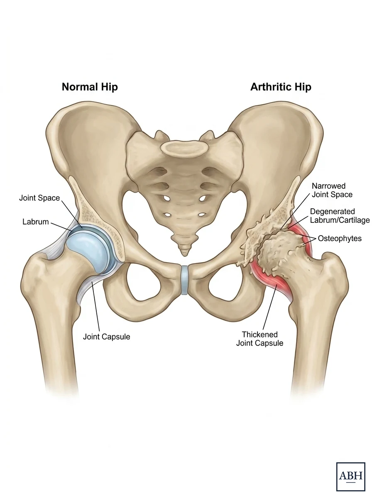

Hip arthritis rarely becomes a problem all at once. The symptoms usually build very slowly over time. A stiff hip in the morning, a shorter walk before pain sets in, trouble putting on shoes and socks, an ache that starts to interrupt sleep. Because it comes on slowly, many people are surprised how much life they have given up by the time surgery becomes part of the discussion.1,2
A hip replacement is rarely something you strictly need. It is an elective operation, considered when damage to the joint limits the things that matter to you and non-surgical treatment is no longer enough. The timing is your decision, and it is not set by a particular age or X-ray finding.
Osteoarthritis is the most common reason, but not the only one. A hip may also be replaced for avascular necrosis, which is loss of blood supply to the ball of the hip, for inflammatory arthritis such as rheumatoid or psoriatic disease, for hip dysplasia, or for damage that develops years after an injury or fracture.
Hip arthritis pain usually feels as if it is in the front of the groin. Pain at the front of the hip or the inside of the thigh, sometimes referring down toward the knee, is typically (but not always) coming from the hip joint itself. Pain at the belt line or across the back of the buttock, particularly when it travels past the knee into the calf or foot, more often comes from the spine. Numbness and tingling are also signs that there may be a problem with the nerves coming from your lower back, since arthritis does not typically cause these symptoms.
Hip and back pain overlap frequently, and plenty of people have both problems at the same time. Dr. Harris examines the hip and the back at the first visit rather than assuming that the problem is only coming from one place.3,4
An X-ray is one part of the story. Some patients have severe arthritis that is visible on X-ray and are not having much pain. Others have moderate-looking changes and can barely walk a block.5
A few points regarding X-ray:
Weight-bearing films show the joint under load, which is when the space between the ball and socket actually narrows.
The cartilage space has worn down to where the two bones nearly touch. This typically (but not always) is a significant source of pain. On its own it does not necessarily mean you need surgery now, although most patients with “bone on bone” arthritis will be having symptoms severe enough to warrant surgery.

The same joint, healthy on the left and arthritic on the right.
It has a role in specific situations: suspected avascular necrosis, a fracture not visible on X-ray, or a diagnosis that remains unclear.
Most hip arthritis is managed without surgery for a long time.
Physical therapy strengthens the muscles around the hip and can improve how the joint moves and how far you can walk comfortably. It does not regrow cartilage or reverse arthritis. However, that is not a reason to skip PT entirely. Stronger hips tolerate arthritis better, and patients who go into surgery in better condition tend to have an easier recovery.
Weight reduction lowers the load across the joint and can reduce pain. Weight reduction may also lower the risk of complications if surgery happens later.
These take the edge off the pain, reduce inflammation, and help you stay active. Both of these treatments, however, have limits. Long-term daily anti-inflammatory use carries risks to the stomach, kidneys, and cardiovascular system.
The hip is a deep joint, so injections require image guidance with fluoroscopy or ultrasound rather than being given in the office the way a knee injection can be. They are recommended less often for the hip than for the knee.
A numbing (lidocaine) injection can be useful as a diagnostic test. If your pain resolves completely, even temporarily, that is a good sign the pain is coming from the hip joint and that a hip replacement would provide the same relief. A steroid injection is sometimes appropriate for patients with severe arthritis who are not yet ready for surgery.
There is no point at which a hip replacement becomes mandatory. How long you wait is largely up to you, and there are good reasons to wait.
Most patients deserve a real trial of prolonged nonoperative treatment before surgery is considered. This could involve any of the above treatments, or your own activity modification that has become less effective over time as your hip becomes more symptomatic.
Plenty of people have arthritic-looking hips and live full, active lives. If you are still doing what you want to do, there is generally not a reason to undergo a hip replacement surgery.
If the spine, a tendon, or referred pain is still a major contributor to your hip pain, replacing the hip may not completely improve your quality of life the same as it would for other patients.
Yes, though less than some patients are often led to believe.
A hip that has been stiff for years can develop contracture and lose motion, which can sometimes make the operation more involved and the rehabilitation longer. In advanced cases, deformity or bone loss changes the anatomy and adds complexity to the surgery.
The surgery remains possible either way, and the end result is generally the same. No one should have a hip replaced purely out of worry that it will be harder later. The right time is when the joint is limiting your life, non-surgical treatment is no longer enough, and you decide you are ready.
Modern hip replacements are also durable. Registry data covering nearly two million hips implanted with current materials shows more than nine in ten still in place at twenty years, and a similar proportion projected at thirty.6,7
Hip arthritis is almost never an emergency. A few things are. Call rather than wait for the next available appointment if you have:
Dr. Harris starts with your history: where the pain is, what it stops you from doing, and what you have already tried and for how long. Then a hands-on examination of the hip, and of the back and neighboring joints where relevant, to confirm where the pain is actually coming from. Standing X-rays are reviewed, or obtained if you do not have recent ones.
Bringing prior imaging helps, ideally the images themselves (sometimes on a disc) rather than only the report. A list of treatments you have tried, with rough dates, saves time. So does a short list of the specific activities you want back.
If surgery is the right step, he will go through the options, including the anterior and STAR approaches to hip replacement, what recovery looks like, and a realistic timeline. If it is not, he will say so and lay out what to do instead.
Hip replacement is elective, so the question is less whether you need it and more whether you want it. It is usually considered when joint pain limits daily life despite non-surgical treatment. Common signs include groin or thigh pain with walking, stiffness that limits putting on shoes or socks, pain that disturbs sleep, and a hip that no longer responds to activity changes, physical therapy, anti-inflammatory medication, or injections.
Osteoarthritis (wear-and-tear arthritis) is the most common reason, but far from the only one. Others include avascular necrosis (loss of blood supply to the ball of the hip), hip dysplasia, inflammatory arthritis such as rheumatoid arthritis, and certain hip fractures.
Yes. Most hip arthritis is managed first without surgery: activity modification, physical therapy, weight management, anti-inflammatory medication, and injections. Surgery enters the conversation when those measures no longer provide enough relief to do the things you care about.
Hip arthritis usually causes groin or front-of-thigh pain, sometimes referring toward the knee. Pain at the belt line or the back of the buttock that travels past the knee, or that comes with numbness and tingling, more often comes from the spine. The two frequently overlap, so both are examined at the first visit.
Sometimes, but not always. “Bone on bone” means the cartilage space has worn down until the bones nearly touch on an X-ray. It can certainly explain why a hip hurts. Whether to operate rests on how much the joint limits your daily life, whether non-surgical treatment is still working, and whether you are ready.
Modern hip replacements have excellent outcomes and can last for 30+ years.6,7 While it is less common for younger patients to need a hip replacement, this is certainly a reasonable option if your hip pain is severely limiting your quality of life. The decision-making in younger patients becomes extremely nuanced and cannot be fully explained in a short paragraph, but Dr. Harris is willing to discuss the possibility of hip replacement in patients of all ages.
Usually not. Standing X-rays are typically enough to diagnose hip arthritis. MRI is reserved for specific questions, such as suspected avascular necrosis, a fracture not visible on X-ray, or an unclear diagnosis.
It can. Hip injections require image guidance because the joint is deep, and they are used less often than knee injections. A numbing injection is helpful diagnostically: if it relieves your pain completely, even briefly, that suggests the hip joint is the source and that a replacement would give the same relief. A steroid injection is sometimes used for severe arthritis when someone is not yet ready for surgery.
A hip that has been stiff for many years can develop contracture, and advanced cases can involve deformity or bone loss that make the operation more complex and rehab longer. The surgery is still possible and the end result is generally the same, so worry that it will be harder later is not a good reason to operate sooner. The right time is when the joint limits your life, non-surgical care is no longer enough, and you are ready.
Dr. Harris reviews your symptoms, performs a hands-on examination, and reviews your X-rays or MRI. Every recommendation is individualized. If surgery is the right step, he will explain the options, including the anterior and STAR approaches.
The hip replacement recovery guide covers what the weeks after surgery actually look like. When you want your hip evaluated in person, send a message and someone will follow up.